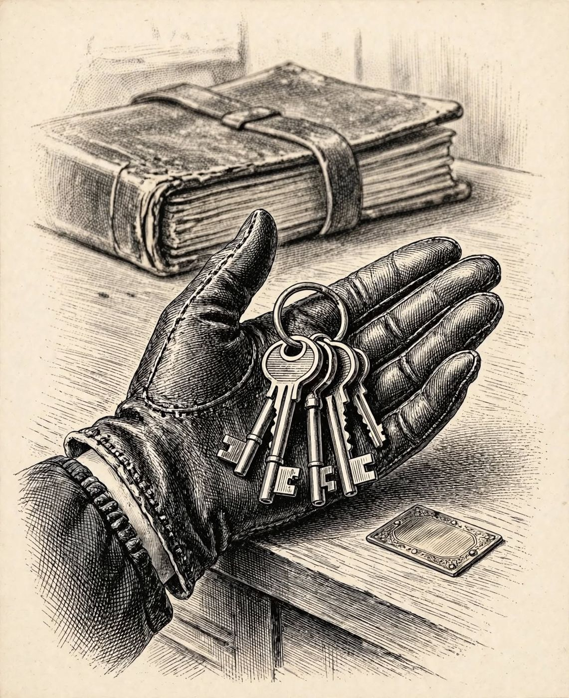

1 de diciembre
El Hallazgo de la Sala del Reloj
Libro · págs. 6-9
Audio del día
Transcripción
«No abra esa puerta todavía, detective... Déjeme respirar. Han pasado treinta y un años desde que entré a trabajar en el Altaneve y jamás había visto algo así. El señor Lombard está ahí dentro, sobre la alfombra. Todo parece en su sitio a simple vista, pero... fíjese bien. La chimenea lleva horas apagada, la luz de la nevada lo vuelve todo ceniza y hay algo en el orden de esta sala que no encaja. Examine cada rincón. Lo que hoy parezca un detalle sin importancia puede ser lo único que nos salve.»

Intenta resolverlo primero. Abre solo lo que necesites, en este orden.
1Pista sutil
Cada una de las ocho estaciones tiene varios detalles decorativos, pero solo un hallazgo rompe directamente las normas o la rutina habitual que te dictó Odile. Enfócate únicamente en lo que es una anomalía.
2Comprobación parcial
Comprueba las tres primeras estaciones: la anomalía de la Estación 1 está ligada al número 2 (dos surcos); la de la Estación 2, al número 6 (seis palmos); y la de la Estación 3, al número 3 (tres botones). La suma de las cifras de estas tres primeras estaciones debe ser 11.
3Pista fuerte
Las ocho anomalías son: los dos surcos de la alfombra, el sillón girado y lejos de sus hendiduras, la camisa abierta del cadáver, el vaso con líquido incoloro y turbio, el segundo aro sin vaso, el pisapapeles sobre madera desnuda, el bloc sin su hoja superior, y el Libro Vesper fuera de la caja fuerte. Las cifras están en cada una de ellas ("dos surcos", "seis palmos", "tres botones", "un dedo", "cinco dedos", "cuatro hojas", "siete flecos", "página 8").
4Solución oficialSpoiler si no lo has intentado
Anomalías y cifras:
Alfombra: Dos surcos de arrastre → 2
Sillón: Seis palmos fuera de sus hendiduras → 6
Cadáver: Tres botones arrancados → 3
Vaso: Un dedo de líquido incoloro → 1
Aros de humedad: Segundo aro a cinco dedos → 5
Pisapapeles: Cuatro hojas faltantes → 4
Bloc: Siete flecos desgarrados → 7
Libro Vesper: Abierto en la página 8 → 8
Para el desenlace de la historia, vuelve al libro: la sección de soluciones está al final.